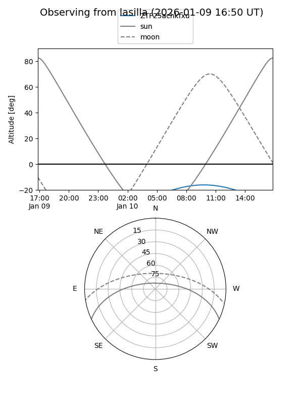
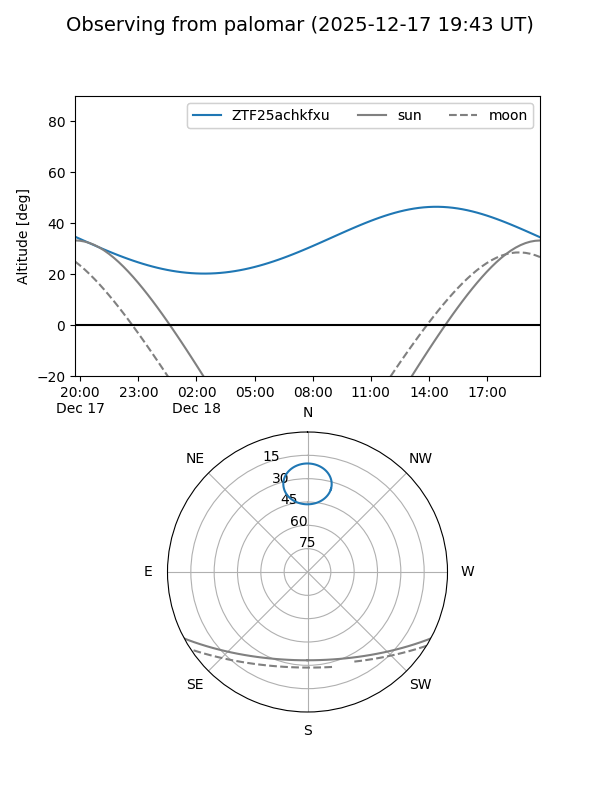

ZTF25achkfxu
Target ZTF25achkfxu at 2026-01-09 12:49
Aliases and brokers:
FINK: link
Lasair: link
ALeRCE: link
alt names
ZTF25achkfxu (ztf,fink_ztf)
Coordinates:
equatorial (ra, dec) = 185.9333,+77.02559
equatorial (HMS+DMS) = 12:23:44.00,+77:01:32.11
galactic (l, b) = (124.9572,+39.99353)
Flags:
Photometry:
last ztfr=19.97
1 ztfr detections
Lightcurve

Visibility


Additional plots